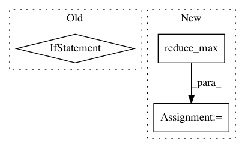

ccbe291ec9859698a57147b1033d503a7739dfa9,tensorforce/core/distributions/categorical.py,Categorical,create_tf_operations,#Categorical#Any#Any#,54
Before Change
def create_tf_operations(self, x, deterministic):
flat_size = util.prod(self.shape) * self.num_actions
bias = [prob for _ in range(util.prod(self.shape)) for prob in self.probabilities]
logits = layers["linear"](x=x, size=flat_size, bias=bias)
logits = tf.reshape(tensor=logits, shape=((-1,) + self.shape + (self.num_actions,)))
self.probabilities = tf.nn.softmax(logits=logits)
After Change
self.logits = tf.reshape(tensor=self.logits, shape=shape)
// linearly shift logits for numerical stability
self.logits -= tf.reduce_max(input_tensor=self.logits, axis=-1, keep_dims=True)
// softmax for corresponding probabilities
self.probabilities = tf.nn.softmax(logits=self.logits, dim=-1)
In pattern: SUPERPATTERN
Frequency: 3
Non-data size: 3
Instances
Project Name: reinforceio/tensorforce
Commit Name: ccbe291ec9859698a57147b1033d503a7739dfa9
Time: 2017-08-03
Author: aok25@cl.cam.ac.uk
File Name: tensorforce/core/distributions/categorical.py
Class Name: Categorical
Method Name: create_tf_operations
Project Name: wenwei202/iss-rnns
Commit Name: 6fe058037c6126c5806c34debf86b3cf302219be
Time: 2016-11-01
Author: seominjoon@gmail.com
File Name: basic/model.py
Class Name:
Method Name: bi_attention
Project Name: NVIDIA/OpenSeq2Seq
Commit Name: 6313ad3830b5fc05926168eeb5faea1afe8e19f3
Time: 2018-06-20
Author: jasoli@nvidia.com
File Name: open_seq2seq/decoders/tacotron2_decoder.py
Class Name: Tacotron2Decoder
Method Name: _decode